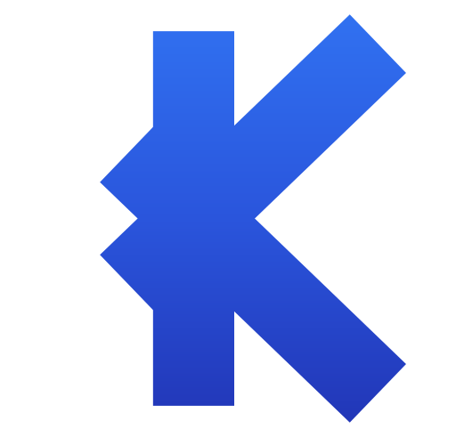
As diagonais do K atravessam a barra e formam um X. Kovex começa em K e termina em X.
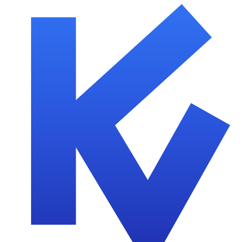
O braço superior do K desce num traço contínuo e vira um V no lugar da perna.
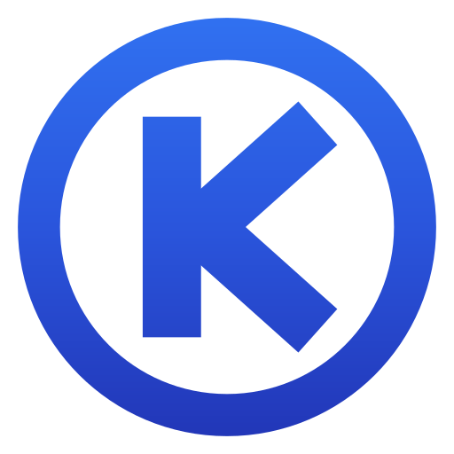
O "O" vira um anel envolvendo um K compacto — bom para selo e avatar.
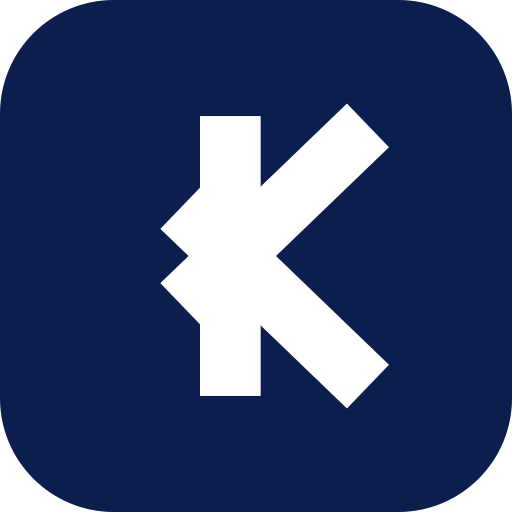
Versão em negativo sobre navy, para ícone de app e favicon.
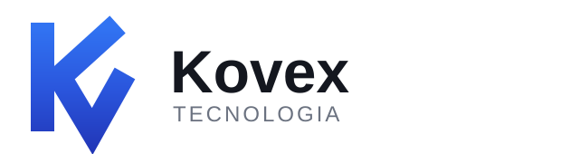
Monograma K+V com o nome, para site, assinatura de e-mail e documentos.
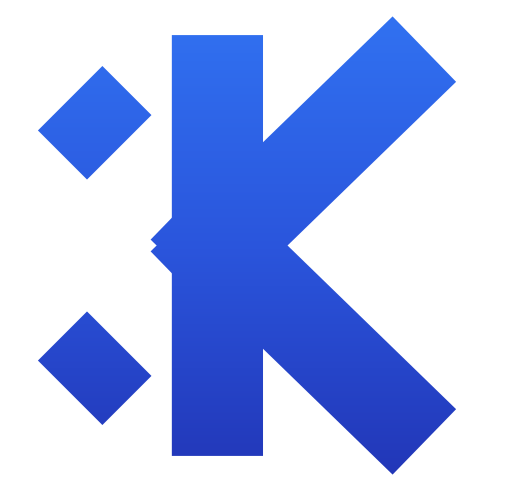
Caudas do X destacadas com um vão, no mesmo estilo do seu mark original.
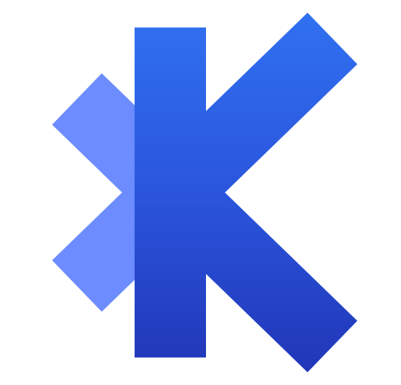
O K no gradiente principal; as caudas do X em azul claro, como se o X "emergisse" por trás.
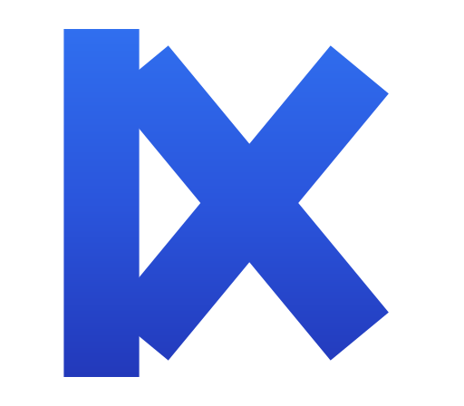
Um X inteiro encostado na barra vertical, formando uma letra única.
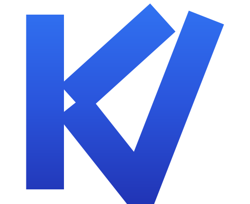
Como o K+V original, mas o V sobe até a altura total — mais largura e presença.
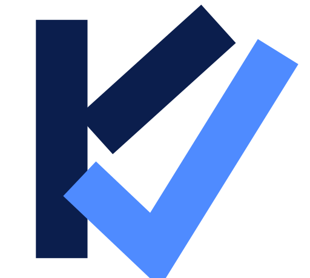
K sólido em navy com o V em forma de check azul atravessando — remete a confiança/validação.
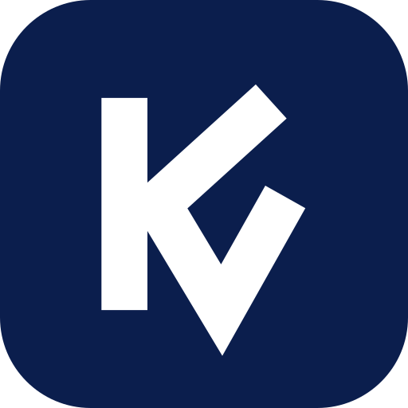
O K+V vencedor da rodada 1 em branco sobre navy, para ícone de app.